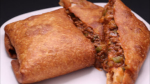
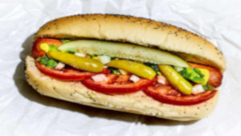
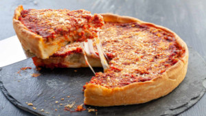

Pizza Puff
A pizza puff is a deep-fried dough pocket filled with cheese, tomato sauce, and other pizza ingredients such as sausage or pepperoni. Originally from Chicago, pizza puffs can be found at many casual dining restaurants there.
Italian Beef

An Italian beef is a sandwich, originating in Chicago, made from thin slices of roast beef simmered and served au jus on French bread. Common toppings are a choice between spicy giardiniera (called "hot") and cheese. The entire sandwich is traditionally dipped in the juice the meat is cooked in before serving with a side of French fries.
Chicago-Style Hotdog
A Chicago-style hot dog, Chicago dog, or Chicago red hot is an all-beef frankfurter on a poppy seed bun, originating from the city of Chicago, Illinois.The hot dog is topped with yellow mustard, chopped white onions, bright green sweet pickle relish, a dill pickle spear, tomato slices or wedges, pickled sport peppers, and a dash of celery salt.
Deep Dish Pizza
Chicago-style pizza is pizza prepared according to several styles developed in Chicago. The pan in which deep-dish pizza is baked gives the pizza its characteristically high edge, which provides ample space for large amounts of cheese and a chunky tomato sauce. Chicago-style deep-dish pizza may be prepared either this way or stuffed.